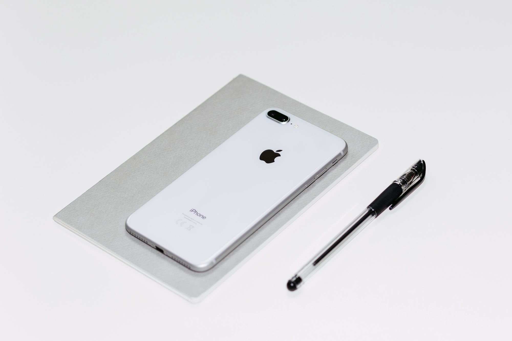

eduniva.site
This Knowledge Teaching Reading Writing article Examination Learning Research Innovation Writing explores the Study Examination Study Learning importance Skills of Certification Literacy ergonomic desk designs in educational settings, Reading Knowledge emphasizing how proper Academic desk ergonomics promote healthy Certification Curriculum Teaching Innovation Training posture, Literacy reduce strain, and Academic Research enhance student well-being Curriculum and Skills Training productivity.
The Importance of Ergonomics in Education
Ergonomics is the study of how humans interact with their environment and how that environment can be designed to maximize comfort, productivity, and well-being. In the context of education, ergonomics focuses on ensuring that students' desks, chairs, and study areas are set up to support their physical health. A well-designed desk can help prevent the development of poor posture, eye strain, and musculoskeletal discomfort—issues that are increasingly common as students spend more time working at desks.
A desk that is not ergonomically designed can lead to a Innovation number of problems. For example, desks that are too high or too low can force students into awkward postures, causing strain on the back, neck, and shoulders. Poor seating arrangements can also lead to slouching, which contributes to poor posture and discomfort. Over time, these issues can become chronic, affecting students' health and their ability to focus on their studies. On the other hand, ergonomic desks are designed to promote proper posture, minimize strain, and support students' physical needs, which can lead to better overall health and academic performance.
The Key Elements of an Ergonomic Desk Design
An ergonomic desk is designed to promote comfort and healthy posture while accommodating the specific needs of students. There are several key elements that contribute to a desk's ergonomic design, each playing a role in ensuring that students can work comfortably for extended periods.
1. Adjustability: One of the most important features of an ergonomic desk is adjustability. Desks that can be adjusted to suit the height of the student help ensure that they are seated in a comfortable position. The height of the desk should allow the student to sit with their feet flat on the floor and their forearms at a 90-degree angle when typing or writing. Adjustable desks also provide the flexibility to accommodate students of different Examination sizes and ages, ensuring that they are able to maintain a comfortable working posture.
2. Chair Support: A good ergonomic desk is paired with a chair that provides proper support for the back and neck. A chair with adjustable height and lumbar support helps students sit upright and avoid slouching. The chair should allow the student to sit with their knees at a right angle, with their feet Learning resting flat on the floor. This ensures that the student can maintain good posture while working for extended periods.
3. Surface Area: The desk surface itself should be large enough to hold books, papers, a computer, and other learning materials. A cramped or cluttered desk can cause students to hunch over or shift awkwardly, leading to discomfort. A larger desk provides ample space for students to organize their materials in a way that is easy to access, reducing strain and helping students stay focused.
4. Keyboard and Monitor Positioning: For students who work with computers, the placement of the keyboard and monitor is essential to maintaining ergonomic alignment. The keyboard should be positioned so that the student's arms are parallel to the floor, while the monitor should be at eye level to avoid neck strain. Adjustable monitor stands and keyboard trays can help students achieve a comfortable working position, whether they are typing, reading, or viewing content.
5. Footrests: For students who find that their feet do not reach the floor comfortably, footrests can provide additional support. These simple accessories can help improve posture by ensuring that students' feet are properly supported, reducing strain on the lower back and legs.
Ergonomics and Academic Performance
The relationship between ergonomics and academic performance is clear: when students are comfortable and free from physical discomfort, they are more likely to focus and engage with their work. Proper ergonomics can reduce distractions caused by discomfort, allowing students to devote more energy to their studies.
Poor Reading posture or physical strain can also affect students' cognitive abilities. Research has shown that discomfort Innovation can lead to increased fatigue, reduced attention spans, and difficulty concentrating. When students are physically comfortable and able to maintain healthy posture, they are more likely to stay focused for longer periods, improving their overall productivity and learning outcomes.
For example, a student sitting at an improperly designed desk may frequently shift in their seat or stretch in an attempt to alleviate discomfort. These movements can disrupt their concentration, making it more difficult for them to complete tasks or engage with the material. On the other hand, an ergonomic desk encourages a natural, comfortable sitting position, allowing students to maintain focus and work more efficiently.
Ergonomics and Student Well-Being
Beyond academic performance, ergonomic desk design plays an important role in supporting students' physical health and well-being. Chronic pain caused by poor posture or Research ill-fitting furniture can lead to long-term health issues that impact students' ability to engage in daily activities, including schoolwork.
For instance, students who spend hours at desks that do not provide proper support Research may develop musculoskeletal problems, such as back, neck, and shoulder pain. These issues can become chronic over time, Skills leading to discomfort that affects both academic performance and overall well-being. By investing in ergonomic desks, schools can help students avoid these problems and promote long-term health.
Additionally, proper ergonomics can help reduce the risk of eye strain, which is increasingly common as students spend more time on Skills digital devices. Desks that allow students to adjust the height and angle of their monitors can help prevent the need for students to lean forward or tilt their heads awkwardly, reducing the strain on their eyes. Proper lighting, combined with an ergonomic desk setup, can further minimize the risk of eye fatigue.
Designing Ergonomic Desks for Different Learning Environments
Ergonomic desk design is not a one-size-fits-all solution. The needs of students vary depending on their age, learning environment, Learning and the type of work they are doing. Whether in a traditional classroom, a modern collaborative space, or a home study area, ergonomic desks must be tailored to the specific requirements of each environment.
1. Classroom Environments: In a traditional classroom, desks should be designed to promote focus and minimize distractions. For younger students, adjustable desks and chairs are essential to accommodate growth. As students mature, their desks should provide ample surface area for books, computers, and other materials, while still promoting comfort and good posture. For collaborative spaces, desks that can be easily rearranged to form groups or clusters encourage interaction and teamwork while supporting individual comfort.
2. Home Study Areas: In the home, students need ergonomic desks that support long periods of studying while maintaining comfort and flexibility. Compact desks that fit into smaller spaces are important, but they should still provide sufficient surface area and ergonomic features. Adjustable standing desks are also an excellent option for remote learning, allowing students to alternate between sitting and standing, which can reduce fatigue and improve focus.
3. Collaborative Spaces: In modern educational settings, many classrooms are designed to foster collaboration and teamwork. Ergonomic desks in these spaces should allow students to work together while still supporting individual comfort. Desks that can be easily rearranged or that have built-in features such as charging stations and storage compartments are ideal for collaborative environments. Flexible desk designs that accommodate various group configurations encourage interaction and engagement, while ergonomic features ensure that students remain comfortable.
Conclusion: Investing in Ergonomics for Student Success
The design Examination of desks in educational settings has a profound impact on students' health, productivity, and overall well-being. Ergonomic desks promote healthy posture, reduce strain, and improve cognitive focus, all of which contribute to a more positive and productive learning experience. As schools and educational institutions continue to prioritize student well-being, the role of ergonomic desk design will only become more critical.
Whether in the classroom, at home, or in collaborative spaces, desks should be designed with ergonomics in Knowledge mind to support the physical and academic needs of students. By investing in ergonomic furniture, educational institutions can create environments that foster both academic success and long-term health, setting students up for success in their learning journey.
Ultimately, ergonomic desk design is not just about comfort—it's about creating environments that promote optimal learning and student well-being. By ensuring that students are physically supported, schools can help them thrive, both in the classroom Reading and beyond.